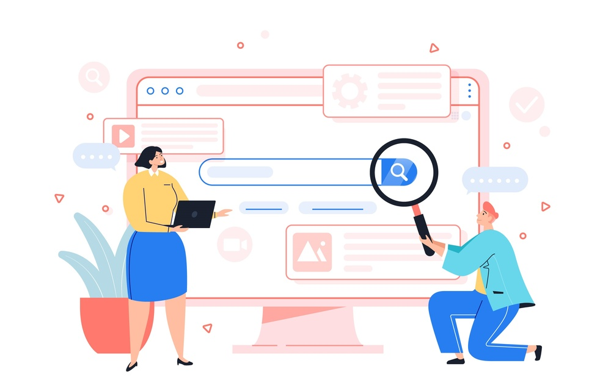
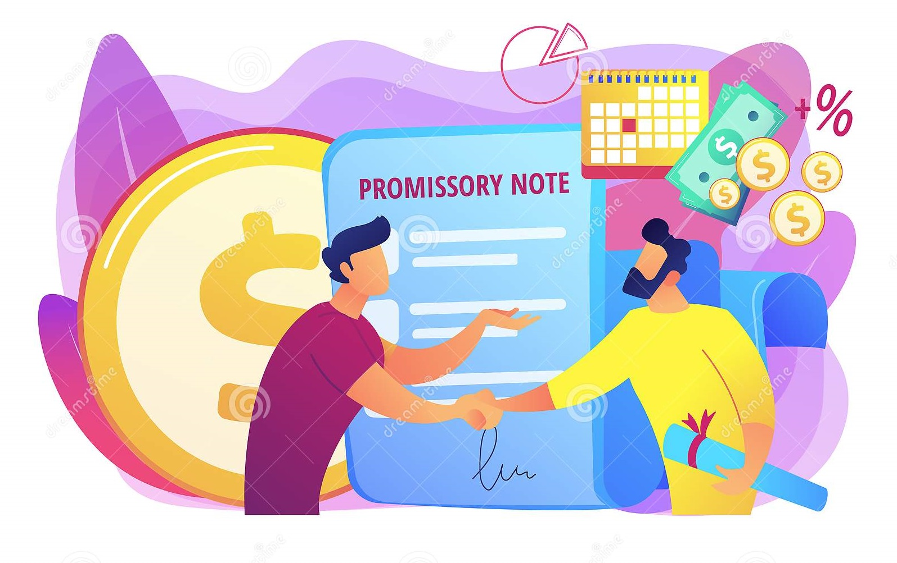
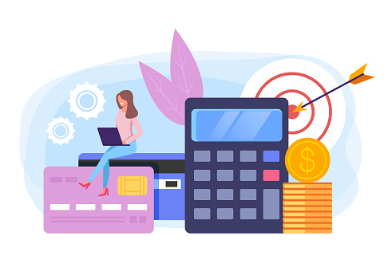

Departamento del Atlántico
Solicita un préstamo y págalo en cuotas que se ajustan a tus presupuestos. Con nosotros tendrás:
- Conversación de negocio virtual
- Variedad de prestamistas
- Prestamos 100% seguros

¿Cómo realizar un crédito?
1
Crea una cuenta de usuario
Tienes la opción de crear tu cuenta de usuario como cliente o prestamista. En el caso que elijas cliente podrás solicitar el préstamo que necesites. Sin embargo, si elijes ser prestamista podrás disponer de tu servicio de prestamista para generar préstamos a los clientes.
2

Busca un prestamista
Cómo usuario cliente podrás buscar prestamistas, ingresando el monto deseado en el buscador de la plataforma.
3
Recibe notificaciones de posibles clientes
Cómo usuario cliente recibiras notificaciones de los clientes que soliciten un monto a prestar.
4
Inicia una conversación para concretar un préstamo
Si eres cliente, podrás iniciar conversaciones con solo dar click al perfil de uno de los prestamista que aprezca al buscar un monto. Pero si eres prestamista, podrás iniciar conversaciones al darle click al perfil de una de las notificaciones.
5

Haz uso de los pagaré
sdsffffffffffffffffffffffffffffffffffffffffffffff fffffffffffffffffffffffffffffffffffffffffffffffff
6
